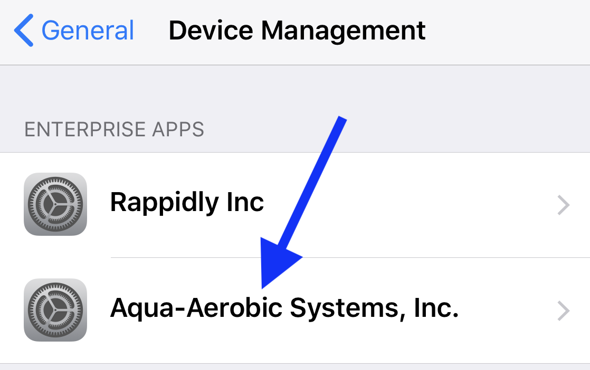

<hr>
		<p align="left"><b>TRUST APP 
			       </b><ul>
	<li>When you first open the app you see a notification that the app isn't trusted on your device. You can dismiss this message.</li>
	<br><br><br>		       
	<li>Tap <b>Settings > General > VPN & Device Management > Aqua-Aerobic Systems, Inc.</b></li>
	<br><br><br>	
	<li>Tap <b>Trust "Aqua-Aerobic Systems, Inc"</b></li>
        <br><br><br>
	<li>Tap <b>Trust</b> prompt to verify that you trust the app</li>
	<br><br><br>	
	<li>You are now ready to use the app</li>	
	<br><br><br>
	<li>Open app  and Tap <b>Allow Notifications</b></li>
        <br><br><br>
        <li>Enjoy!</li>
			       </ul>
